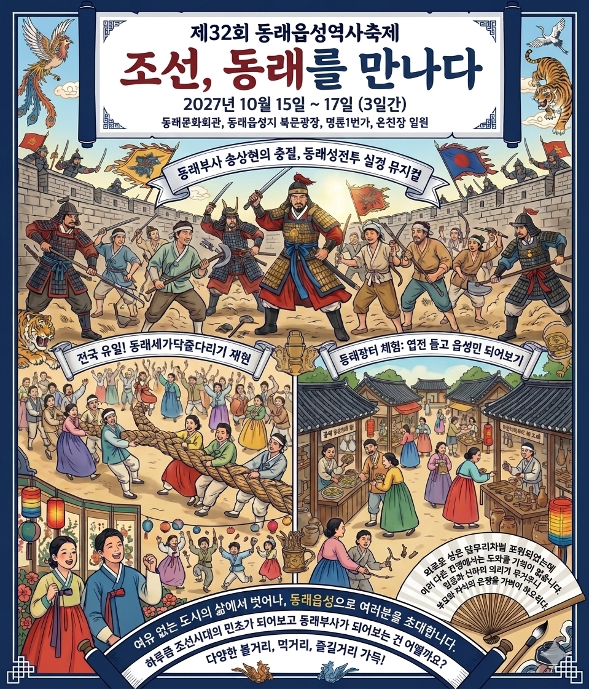

축제 개요
동래부사 송상현의 충절과 옛 동래읍성민의 삶이 녹아있는 동래읍성으로 여러분을 초대합니다.
여유 없는 도시의 삶에서 벗어나 하루쯤 동래읍성에서 조선시대의 민초가 되어보고 동래부사가 되어보는 건 어떨까요?
1592년 조선, 동래를 만나다
동래읍성역사축제가 10월 16일부터 18일까지 3일간 동래문화회관, 동래읍성지 북문광장, 명륜1번가, 온천장 일원에서 개최됩니다.
물밀 듯이 밀려오는 왜군에 맞서 나라를 위해 초개같이 목숨을 던진 동래부사 송상현과 동래 읍성민의 치열한 전투를 그린 동래성전투 실경 뮤지컬, 전국 유일의 동래세가닥줄다리기 재현, 전통 한복을 입고 짤랑짤랑 엽전을 가지고 동래 읍성민이 되어보는 동래장터 체험 등 다양한 볼거리, 먹거리, 즐길거리로 조선시대 읍성민으로의 하루를 선사하고자 합니다.
동래읍성역사축제추진위원장